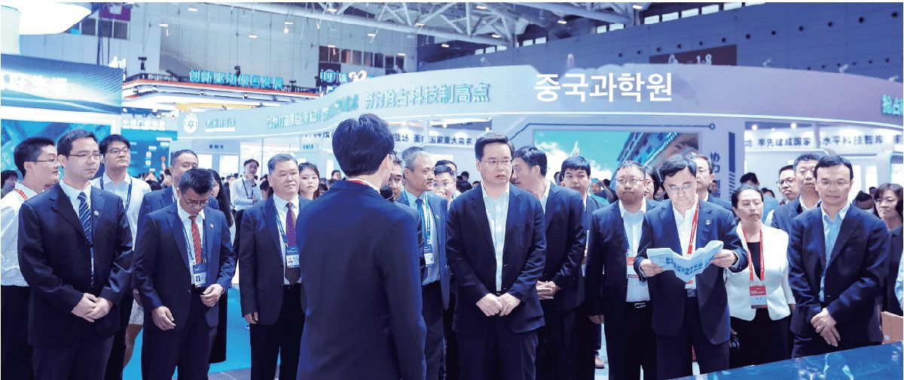

연구기관·대학·산학융합·국가중점실험실전

연구기관·대학·산학융합·국가중점실험실·바이오기술 전시구역
2026년 11월 26~28일
선전 국제회의전시센터(바오안)
전시 소개
중국 하이테크 성과 교역회는 국무원 승인을 받아 선전시 인민정부가 주최하고 전웨이 국제전시그룹과 선전 전웨이 국제전람이 주관하는 행사입니다. 고등교육 학술 교류, 산학·과학교육 융합, 첨단 교육 장비 전시, 연구성과 전환, 기술기업 인큐베이팅, 기술 서비스, 무역 상담을 아우릅니다. 대학의 혁신 성과가 실험실을 벗어나 시장으로 나아가고 기업 수요와 정확히 만나도록 돕습니다.

전시관 지원
1. 대학과 기업의 정밀 연결을 위해 연구성과관을 마련했습니다. 종합·전문 연구기관, 대학 연구조직, 기업 연구개발센터, 정부 산하 연구기관, 국제 연구조직의 중국 기관, 민간 연구기관을 초청해 AI, 바이오의약, 신소재, 반도체 등의 성과를 선보입니다.

2. 산학융합전도 마련해 국내외 산학융합 자원을 모으고 교류·협력 플랫폼을 만듭니다. 교육, 과학기술, 인재의 융합으로 새로운 업태와 산업 전환을 이끌고, 대학·지역·기업 협력을 넓혀 산학연 융합을 촉진합니다.
협력 대학
칭화대, 베이징대, 푸단대, 화중과기대, 우한대, 난징대, 퉁지대, 톈진대, 난카이대, 전자과기대, 중국지질대, 남방과기대, 정저우대, 허난대, 선전대, 홍콩중문대, 홍콩대, 싱가포르국립대 등 유수 대학이 참가를 신청했습니다.
동시 행사
산학융합·과학교육 포럼
신기술·신제품 첫 공개 로드쇼
고교회 대만구 기업·산학연 협력 100인 포럼
광둥성 과학기술청 실험실 성과 매칭회 등
지난 행사 뉴스 (이미지를 누르면 재생)

협력 매체